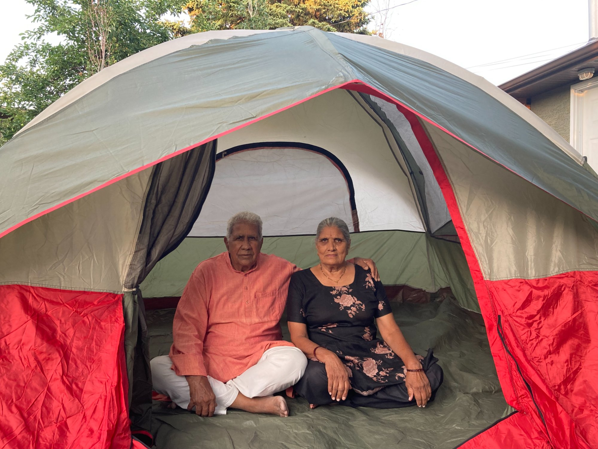
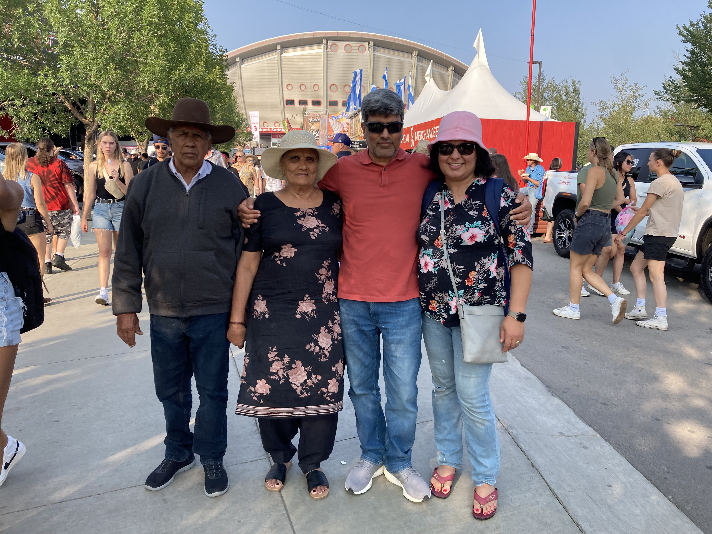
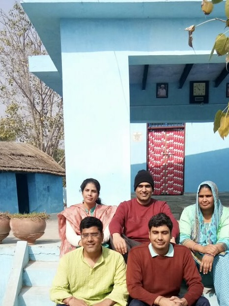

<!DOCTYPE html>
<html lang="en">
<head>
    <meta charset="UTF-8">
    <meta name="viewport" content="width=device-width, initial-scale=1.0">
    <title>Understanding Back Pain Treatment for Seniors</title>
    
    <!-- Tailwind CSS -->
    <script src="https://cdn.tailwindcss.com"></script>
    
    <!-- React & ReactDOM -->
    <script crossorigin src="https://unpkg.com/react@18/umd/react.production.min.js"></script>
    <script crossorigin src="https://unpkg.com/react-dom@18/umd/react-dom.production.min.js"></script>
    
    <!-- Framer Motion -->
    <script src="https://unpkg.com/framer-motion@10/dist/framer-motion.js"></script>
    
    <!-- Babel for JSX -->
    <script src="https://unpkg.com/@babel/standalone/babel.min.js"></script>
    
    <style>
        body {
            margin: 0;
            padding: 0;
            overflow: hidden;
            font-family: system-ui, -apple-system, sans-serif;
        }
    </style>
</head>
<body>
    <div id="root"></div>

    <script type="text/babel">
        const { useState } = React;
        const { motion, AnimatePresence } = Motion;

        // Lucide icons as SVG components
        const ChevronLeft = () => (
            <svg width="32" height="32" viewBox="0 0 24 24" fill="none" stroke="currentColor" strokeWidth="2">
                <polyline points="15 18 9 12 15 6"/>
            </svg>
        );

        const ChevronRight = () => (
            <svg width="32" height="32" viewBox="0 0 24 24" fill="none" stroke="currentColor" strokeWidth="2">
                <polyline points="9 18 15 12 9 6"/>
            </svg>
        );

        const Home = () => (
            <svg width="32" height="32" viewBox="0 0 24 24" fill="none" stroke="currentColor" strokeWidth="2">
                <path d="M3 9l9-7 9 7v11a2 2 0 0 1-2 2H5a2 2 0 0 1-2-2z"/>
                <polyline points="9 22 9 12 15 12 15 22"/>
            </svg>
        );

        const SlidePresentation = () => {
            const [currentSlide, setCurrentSlide] = useState(0);
            const [direction, setDirection] = useState(0);

            const slides = [
                // Slide 0: Title
                {
                    type: 'title',
                    content: {
                        title: "UNDERSTANDING BACK PAIN TREATMENT FOR SENIORS",
                        subtitle: "A Research-Based Family Presentation",
                        tagline: "What the Science Says About Active Participation in Recovery for Patients Over 80"
                    }
                },
                // Slide 1: Reality Check
                {
                    type: 'content',
                    content: {
                        title: "The Reality Check: It's Not a Passive Fix",
                        points: [
                            "Many seniors believe surgery will 'fix' the problem passively",
                            "In private practice settings, surgery may be recommended based on MRI images",
                            "BUT the full picture is often not discussed:",
                            "• The cognitive risks (confusion, memory, dementia)",
                            "• The functional risks (loss of independence)",
                            "• That many 80-year-olds have same MRI findings with no pain",
                            "• That recovery requires YOUR active participation - not passive benefits",
                            "• That conservative treatment with patient engagement often works just as well",
                            "• That the body can heal naturally when you actively support it"
                        ],
                        emphasis: "No treatment - surgical or conservative - offers passive benefits. You must actively participate in your recovery."
                    }
                },
                // Slide 2: MRI Reality
                {
                    type: 'content',
                    content: {
                        title: "Your MRI Might Not Mean What You Think",
                        points: [
                            "By age 80:",
                            "• 96% have disc degeneration",
                            "• 84% have disc bulges",
                            "• 43% have disc protrusions",
                            "Even in people with NO back pain"
                        ],
                        emphasis: "Finding something on MRI doesn't mean it needs surgery",
                        citation: "Brinjikji W, et al. AJNR Am J Neuroradiol. 2015"
                    }
                },
                // Slide 3: Natural Healing
                {
                    type: 'content',
                    content: {
                        title: "The Body's Natural Healing Ability",
                        subtitle: "(With Your Active Support)",
                        points: [
                            "67% of lumbar disc herniations shrink or resorb naturally",
                            "This happens over weeks to months with active conservative care",
                            "Higher rates for extruded and sequestered discs",
                            "The body has its own healing mechanism - but YOU must support it through:",
                            "• Active participation in physical therapy",
                            "• Regular exercises as prescribed",
                            "• Lifestyle modifications",
                            "• Movement and activity (not bed rest)"
                        ],
                        emphasis: "Natural healing isn't passive waiting - it requires your active engagement in conservative treatment",
                        citation: "Zhong M, et al. Pain Physician. 2017"
                    }
                },
                // Slide 4: Disc Visual
                {
                    type: 'images',
                    content: {
                        title: "Visual Guide to Disc Conditions",
                        subtitle: "Understanding What the MRI Terms Mean",
                        images: [
                            {
                                url: "Disc.png",
                                caption: "Normal Disc → Degeneration → Protrusion → Herniation"
                            }
                        ],
                        note: "These conditions are extremely common in people over 80, even without pain"
                    }
                },
                // Slide 5: What is Back Pain
                {
                    type: 'content',
                    content: {
                        title: "What Back Pain Actually Is",
                        points: [
                            "85% of low back pain cases cannot be given a precise anatomical diagnosis",
                            "Most cases are 'non-specific'",
                            "The pain is REAL",
                            "But MRI findings don't tell us what's causing it"
                        ],
                        emphasis: "If MRI findings aren't causing the pain, operating on them won't help",
                        citation: "Deyo RA, Weinstein JN. N Engl J Med. 2001"
                    }
                },
                // Slide 6: Delirium Risk
                {
                    type: 'alert',
                    content: {
                        title: "DELIRIUM: The Immediate Risk",
                        stat: "40.5%",
                        description: "of adults over 70 develop postoperative delirium after spine surgery",
                        points: [
                            "• Not knowing where they are or what year it is",
                            "• Not recognizing family members",
                            "• Severe agitation or complete withdrawal",
                            "• Hallucinations",
                            "• Can last days to weeks"
                        ],
                        emphasis: "47% of cases are 'hypoactive' (quiet) and go unrecognized",
                        citation: "Brown CH, et al. J Am Geriatr Soc. 2016"
                    }
                },
                // Slide 7: Cognitive Decline
                {
                    type: 'content',
                    content: {
                        title: "Long-Term Cognitive Decline",
                        points: [
                            "9.9% of elderly patients still had cognitive dysfunction 3 months after surgery",
                            "Symptoms include:",
                            "• Memory problems",
                            "• Difficulty concentrating",
                            "• Slower processing speed",
                            "• Personality changes",
                            "• Decreased independence"
                        ],
                        citation: "Moller JT, et al. Lancet. 1998"
                    }
                },
                // Slide 8: Dementia Risk
                {
                    type: 'alert',
                    content: {
                        title: "The Dementia Connection",
                        stat: "2x",
                        description: "higher risk of developing dementia after experiencing delirium",
                        dementia_note: "Dementia means: difficulty remembering family members, losing ability to make decisions, needing constant supervision, unable to manage daily activities independently",
                        emphasis: "Is relieving back pain worth potentially accelerating dementia?",
                        citation: "Witlox J, et al. JAMA. 2010"
                    }
                },
                // Slide 9: Bed Rest
                {
                    type: 'content',
                    content: {
                        title: "What Bed Rest Does to an 80-Year-Old",
                        points: [
                            "Just 10 days of bed rest causes:",
                            "• Loss of 1.5 kg lean leg mass",
                            "• 16% decrease in knee strength",
                            "• Significant decline in leg power",
                            "",
                            "Real-life impact:",
                            "• Difficulty standing from chair",
                            "• Increased fall risk",
                            "• Loss of independence",
                            "",
                            "This is why active participation in movement is critical"
                        ],
                        citation: "Kortebein P, et al. JAMA. 2007"
                    }
                },
                // Slide 10: Independence Crisis
                {
                    type: 'alert',
                    content: {
                        title: "The Independence Crisis",
                        stat: "47%",
                        description: "of delirious patients went home vs 83% of non-delirious patients",
                        emphasis: "This represents NEW loss of independence",
                        points: [
                            "• Moving from home to assisted living/nursing care",
                            "• Needing 24/7 family caregiver",
                            "• Complete dependence on family for transportation",
                            "• Unable to perform basic daily activities alone",
                            "• Becoming a burden on family members"
                        ],
                        citation: "Brown CH, et al. J Am Geriatr Soc. 2016"
                    }
                },
                // Slide 11: Conclusion
                {
                    type: 'conclusion',
                    content: {
                        title: "Bottom Line",
                        points: [
                            "✓ Your MRI findings are normal for age 80",
                            "✓ 67% of disc herniations heal naturally with active conservative care",
                            "✓ Surgery carries real risks: 40% delirium, 2x dementia risk",
                            "✓ Long-term outcomes are similar for surgery vs. conservative treatment",
                            "✓ Conservative treatment preserves independence and cognitive function",
                            "✓ No treatment - surgical or conservative - offers passive benefits",
                            "✓ YOU must actively participate in your recovery"
                        ],
                        emphasis: "Let's try active conservative treatment first - with full understanding that your participation is essential"
                    }
                }
            ];

            const nextSlide = () => {
                if (currentSlide < slides.length - 1) {
                    setDirection(1);
                    setCurrentSlide(currentSlide + 1);
                }
            };

            const prevSlide = () => {
                if (currentSlide > 0) {
                    setDirection(-1);
                    setCurrentSlide(currentSlide - 1);
                }
            };

            const goToStart = () => {
                setDirection(-1);
                setCurrentSlide(0);
            };

            const slideVariants = {
                enter: (direction) => ({
                    x: direction > 0 ? 1000 : -1000,
                    opacity: 0
                }),
                center: {
                    zIndex: 1,
                    x: 0,
                    opacity: 1
                },
                exit: (direction) => ({
                    zIndex: 0,
                    x: direction < 0 ? 1000 : -1000,
                    opacity: 0
                })
            };

            const renderSlide = (slide) => {
                if (slide.type === 'title') {
                    return (
                        <div className="flex items-center justify-center h-full px-16 bg-gradient-to-br from-slate-900 to-blue-900">
                            <div className="w-full max-w-6xl">
                                <div className="grid grid-cols-2 gap-12 items-center">
                                    <div className="text-left">
                                        <motion.h1
                                            initial={{ opacity: 0, y: -50 }}
                                            animate={{ opacity: 1, y: 0 }}
                                            transition={{ delay: 0.2 }}
                                            className="text-6xl font-black mb-8 text-sky-100"
                                        >
                                            {slide.content.title}
                                        </motion.h1>
                                        <motion.p
                                            initial={{ opacity: 0 }}
                                            animate={{ opacity: 1 }}
                                            transition={{ delay: 0.5 }}
                                            className="text-2xl text-sky-200 mb-4 font-semibold"
                                        >
                                            {slide.content.subtitle}
                                        </motion.p>
                                        <motion.p
                                            initial={{ opacity: 0 }}
                                            animate={{ opacity: 1 }}
                                            transition={{ delay: 0.8 }}
                                            className="text-xl text-sky-300 italic mb-8"
                                        >
                                            {slide.content.tagline}
                                        </motion.p>
                                        <motion.p
                                            initial={{ opacity: 0 }}
                                            animate={{ opacity: 1 }}
                                            transition={{ delay: 1.1 }}
                                            className="text-2xl text-amber-300 font-bold"
                                        >
                                            Presented by: Shammi
                                        </motion.p>
                                    </div>
                                    <motion.div
                                        initial={{ opacity: 0, scale: 0.9 }}
                                        animate={{ opacity: 1, scale: 1 }}
                                        transition={{ delay: 0.6 }}
                                        className="flex justify-center"
                                    >
                                        
                                    </motion.div>
                                </div>
                            </div>
                        </div>
                    );
                }

                if (slide.type === 'content') {
                    return (
                        <div className="flex items-center justify-center h-full px-16 bg-gradient-to-br from-slate-800 to-slate-900">
                            <div className="w-full max-w-5xl">
                                <h2 className="text-5xl font-black mb-3 text-sky-300">
                                    {slide.content.title}
                                </h2>
                                {slide.content.subtitle && (
                                    <p className="text-3xl text-sky-400 italic mb-8">
                                        {slide.content.subtitle}
                                    </p>
                                )}
                                <div className="mb-8 space-y-3">
                                    {slide.content.points.map((point, idx) => (
                                        <motion.p
                                            key={idx}
                                            initial={{ opacity: 0, x: -20 }}
                                            animate={{ opacity: 1, x: 0 }}
                                            transition={{ delay: idx * 0.1 }}
                                            className={`text-2xl ${point.startsWith('•') ? 'ml-8 text-gray-200' : 'font-semibold text-sky-200'}`}
                                        >
                                            {point}
                                        </motion.p>
                                    ))}
                                </div>
                                {slide.content.emphasis && (
                                    <motion.div
                                        initial={{ opacity: 0 }}
                                        animate={{ opacity: 1 }}
                                        transition={{ delay: 0.8 }}
                                        className="mb-8 p-5 bg-red-900 bg-opacity-30 border-l-4 border-red-400 rounded max-w-3xl mx-auto"
                                    >
                                        <p className="text-2xl font-bold text-red-200">
                                            {slide.content.emphasis}
                                        </p>
                                    </motion.div>
                                )}
                                {slide.content.citation && (
                                    <div className="pt-4 border-t border-gray-600">
                                        <p className="text-lg text-sky-300 inline-block">
                                            📚 {slide.content.citation}
                                        </p>
                                    </div>
                                )}
                            </div>
                        </div>
                    );
                }

                if (slide.type === 'images') {
                    return (
                        <div className="flex items-center justify-center h-full px-16">
                            <div className="w-full max-w-5xl">
                                <h2 className="text-5xl font-bold mb-4 text-purple-300 text-center">
                                    {slide.content.title}
                                </h2>
                                {slide.content.subtitle && (
                                    <p className="text-3xl text-purple-200 text-center mb-12">
                                        {slide.content.subtitle}
                                    </p>
                                )}
                                <div className="flex justify-center">
                                    {slide.content.images.map((img, idx) => (
                                        <div key={idx} className="bg-purple-900 bg-opacity-30 p-8 rounded-xl border-4 border-purple-400 max-w-4xl">
                                            
                                            <p className="text-2xl text-center text-purple-200 font-bold">
                                                {img.caption}
                                            </p>
                                        </div>
                                    ))}
                                </div>
                                {slide.content.note && (
                                    <p className="mt-8 text-xl text-purple-100 text-center italic">
                                        {slide.content.note}
                                    </p>
                                )}
                            </div>
                        </div>
                    );
                }

                if (slide.type === 'alert') {
                    return (
                        <div className="flex items-center justify-center h-full px-16 bg-gradient-to-br from-red-900 to-orange-900">
                            <div className="w-full max-w-5xl">
                                <motion.h2
                                    initial={{ opacity: 0, scale: 0.9 }}
                                    animate={{ opacity: 1, scale: 1 }}
                                    transition={{ delay: 0.2 }}
                                    className="text-6xl font-black mb-10 text-center text-red-100"
                                >
                                    {slide.content.title}
                                </motion.h2>
                                <motion.div
                                    initial={{ opacity: 0, y: 20 }}
                                    animate={{ opacity: 1, y: 0 }}
                                    transition={{ delay: 0.4 }}
                                    className="bg-white bg-opacity-10 backdrop-blur-sm p-10 rounded-3xl mb-8 text-center"
                                >
                                    <div className="text-9xl font-black text-yellow-300 mb-4">
                                        {slide.content.stat}
                                    </div>
                                    <p className="text-3xl text-red-50 font-semibold">
                                        {slide.content.description}
                                    </p>
                                </motion.div>
                                {slide.content.points && (
                                    <motion.div
                                        initial={{ opacity: 0 }}
                                        animate={{ opacity: 1 }}
                                        transition={{ delay: 0.6 }}
                                        className="mb-8 space-y-3"
                                    >
                                        {slide.content.points.map((point, idx) => (
                                            <p key={idx} className="text-2xl text-red-100">
                                                {point}
                                            </p>
                                        ))}
                                    </motion.div>
                                )}
                                {slide.content.emphasis && (
                                    <motion.div
                                        initial={{ opacity: 0 }}
                                        animate={{ opacity: 1 }}
                                        transition={{ delay: 0.8 }}
                                        className="mb-8 p-5 bg-yellow-500 bg-opacity-30 border-l-4 border-yellow-300 rounded max-w-3xl mx-auto"
                                    >
                                        <p className="text-2xl font-bold text-yellow-100">
                                            {slide.content.emphasis}
                                        </p>
                                    </motion.div>
                                )}
                                {slide.content.citation && (
                                    <div className="pt-4 border-t border-gray-400">
                                        <p className="text-lg text-yellow-200 inline-block">
                                            📚 {slide.content.citation}
                                        </p>
                                    </div>
                                )}
                            </div>
                        </div>
                    );
                }

                if (slide.type === 'conclusion') {
                    return (
                        <div className="flex items-center justify-center h-full px-16">
                            <div className="w-full max-w-6xl">
                                <div className="grid grid-cols-2 gap-12 items-center">
                                    <div className="text-left">
                                        <h2 className="text-4xl font-bold mb-8 text-amber-300">
                                            {slide.content.title}
                                        </h2>
                                        <div className="mb-8">
                                            {slide.content.points.map((point, idx) => (
                                                <motion.p
                                                    key={idx}
                                                    initial={{ opacity: 0, x: -20 }}
                                                    animate={{ opacity: 1, x: 0 }}
                                                    transition={{ delay: idx * 0.1 }}
                                                    className="text-xl mb-3 text-gray-100"
                                                >
                                                    {point}
                                                </motion.p>
                                            ))}
                                        </div>
                                        <motion.div
                                            initial={{ opacity: 0, scale: 0.9 }}
                                            animate={{ opacity: 1, scale: 1 }}
                                            transition={{ delay: 1 }}
                                            className="p-6 bg-amber-900 bg-opacity-40 border-4 border-amber-400 rounded-lg"
                                        >
                                            <p className="text-2xl font-bold text-amber-200">
                                                {slide.content.emphasis}
                                            </p>
                                        </motion.div>
                                    </div>
                                    <div className="flex flex-col gap-6">
                                        <motion.div
                                            initial={{ opacity: 0, scale: 0.9 }}
                                            animate={{ opacity: 1, scale: 1 }}
                                            transition={{ delay: 1.2 }}
                                            className="flex justify-center"
                                        >
                                            
                                        </motion.div>
                                        <motion.div
                                            initial={{ opacity: 0, scale: 0.9 }}
                                            animate={{ opacity: 1, scale: 1 }}
                                            transition={{ delay: 1.4 }}
                                            className="flex justify-center"
                                        >
                                            
                                        </motion.div>
                                    </div>
                                </div>
                            </div>
                        </div>
                    );
                }

                return null;
            };

            return (
                <div className="relative w-full h-screen bg-slate-900 text-white overflow-hidden">
                    <div className="absolute inset-0 flex items-center justify-center" style={{ paddingTop: '80px', paddingBottom: '120px' }}>
                        <AnimatePresence initial={false} custom={direction} mode="wait">
                            <motion.div
                                key={currentSlide}
                                custom={direction}
                                variants={slideVariants}
                                initial="enter"
                                animate="center"
                                exit="exit"
                                transition={{
                                    x: { type: "spring", stiffness: 300, damping: 30 },
                                    opacity: { duration: 0.2 }
                                }}
                                className="absolute w-full h-full flex items-center justify-center"
                            >
                                {renderSlide(slides[currentSlide])}
                            </motion.div>
                        </AnimatePresence>
                    </div>

                    <div className="absolute bottom-10 left-0 right-0 flex justify-center items-center gap-6 z-10">
                        <button
                            onClick={prevSlide}
                            disabled={currentSlide === 0}
                            className={`w-16 h-16 rounded-full flex items-center justify-center transition-all ${
                                currentSlide === 0
                                    ? 'bg-gray-700 text-gray-500 cursor-not-allowed'
                                    : 'bg-sky-600 hover:bg-sky-500 text-white shadow-lg'
                            }`}
                        >
                            <ChevronLeft />
                        </button>

                        <button
                            onClick={goToStart}
                            className="w-16 h-16 rounded-full flex items-center justify-center bg-amber-600 hover:bg-amber-500 text-white transition-all shadow-lg"
                        >
                            <Home />
                        </button>

                        <button
                            onClick={nextSlide}
                            disabled={currentSlide === slides.length - 1}
                            className={`w-16 h-16 rounded-full flex items-center justify-center transition-all ${
                                currentSlide === slides.length - 1
                                    ? 'bg-gray-700 text-gray-500 cursor-not-allowed'
                                    : 'bg-sky-600 hover:bg-sky-500 text-white shadow-lg'
                            }`}
                        >
                            <ChevronRight />
                        </button>
                    </div>

                    <div className="absolute top-8 right-8 bg-slate-800 bg-opacity-80 px-6 py-3 rounded-full z-10 shadow-lg">
                        <span className="text-2xl font-semibold text-amber-300">
                            {currentSlide + 1} / {slides.length}
                        </span>
                    </div>
                </div>
            );
        };

        const root = ReactDOM.createRoot(document.getElementById('root'));
        root.render(<SlidePresentation />);
    </script>
</body>
</html>
